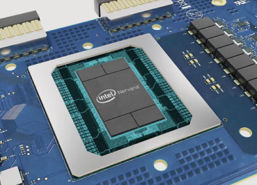

Thoughts and notes
AI or Artificial Intelligence tends to have two different ways of being perceived: our ultimate saviour (usually from the “geeky tech” side) or the doom's technology that will take over the world (conserned consumer side) . In this article I want to look at a couple from a huge number of AI trends in the near future and how they affect UX design.
One of the most influential future trends will be AI-Enabled chips, which could be built in any technology, and would allow the device to power applications that require AI such as object detection, computer vision, facial recognition, natural language processing much faster, more efficient and accurate. For example, newly launched Eyeriss can process queries at a double rate and perform predictive analysis. Due to machine learning, the chips require less (or none) connectivity to process information, which therefore makes any device using it more secure, sustainable and powerful at the same time.
To continue, I am pretty excited to see how the confluence of IoT and AI could empower and support people in their daily lives. It could elevate insights about human interaction with devices to a whole new level by analyzing and combining Big Data of any technology around us, not only our smart devices. “IoT alone will add between 4-11 trillion dollars to the world economy,” speculates the article, which draws the importance of designing safe, useful and sustainable IoT networks.
Similarily to elevator operators that got replaced with buttons decades ago, since the start of the Covid-19 pandemic AI has taken over a huge part of service jobs. In 2020 the International Federation of Robotics has estimated 2,7 million robots working in factories all around the world. This occours not only because the tasks that need to be executed for service jobs tend to be repetitive and easily to mimic for an AI, but also to eliminate the risk of contamination and spreading of the virus. Our comunities are changing and our design approach is adapting.
Not only service jobs are disappearing, generative movies and animation generation with AI has been a theme in question for a while now. For example, a technology developed two years ago can develop a movie from a couple of text snippets. As tthe AI learns, it becomes capable of visualizing absurd statements as well, for example “a boat sailing in snow” does not demand any extra effort to create than a “boat sailing on water”. For now the technology can generate a clip of 1 second of 64 by 64 pixels, pretty impressive! Additionally, if this AI would be combined with self-driving cars, it could generate small clips for dangerous situations self-driving cars wouldn't usually encounter, enchansing the learning possibilities range for self driving cars.
All sounds good and nice, our devices getting more secure and reliable by the day. However, as as more and more processes in society are automatized and while the expansion of AI is still beginnning, we should think about shaping the way it takes place in our community of workers in order to keep balance between the machinery and people.